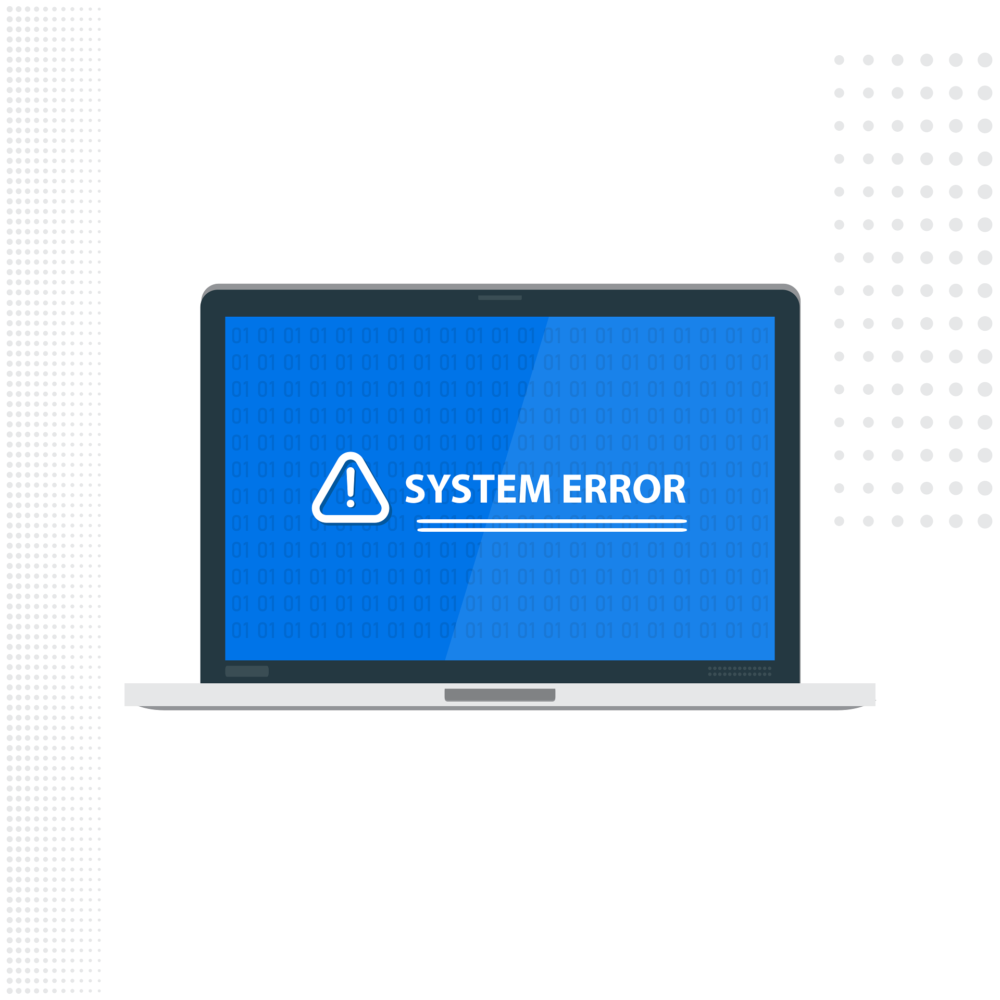

Luca Tanriverdi Tivi25A
Kuvat lähteestä pixabay.com
Virustorjunta

Kaupalliset ohjelmistot:
McAfee
Bitdefender
Hyödyt:
- 24/7 asiakaspalvelu
- Laajat suojausominaisuudet ja vaihtoehdot
- Säännölliset päivitykset ja parannukset
Haitat:
- Maksavat rahaa, yleensä kuukausimaksulla
- Ominaisuudet lakkaavat toimimasta, kun peruuttaa kuukausitilauksen.
Ilmaiset ohjelmistot:
Avast
Windows Defender
Miinukset:
- Suoran teknisen tukipalvelun saatavuuden puute
- Suojaavat yleisiltä ja tunnetuilta tietokoneviruksilta
- Suojaus ei ole yhtä tehokas verkkomaksuja suorittaessa
Plussat:
- Eivät vaadi maksullista tilausta
- Eivät välttämättä vaadi kirjautumista tai tietojen antamista
Paras valinta:
Windows Defender
Syyt:
- Microsoftin virallinen ohjelma
- Hyvä suorituskyky ja vähäinen resurssinkäyttö
- Säännölliset päivitykset ja parannukset